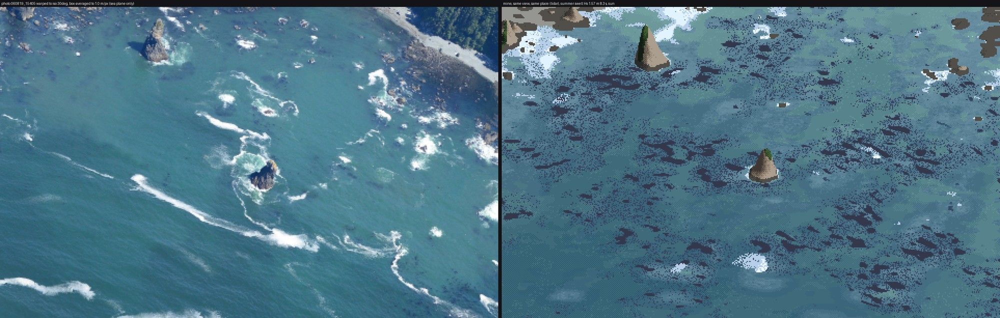
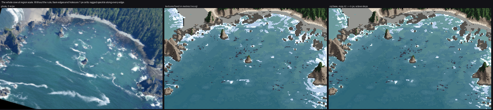
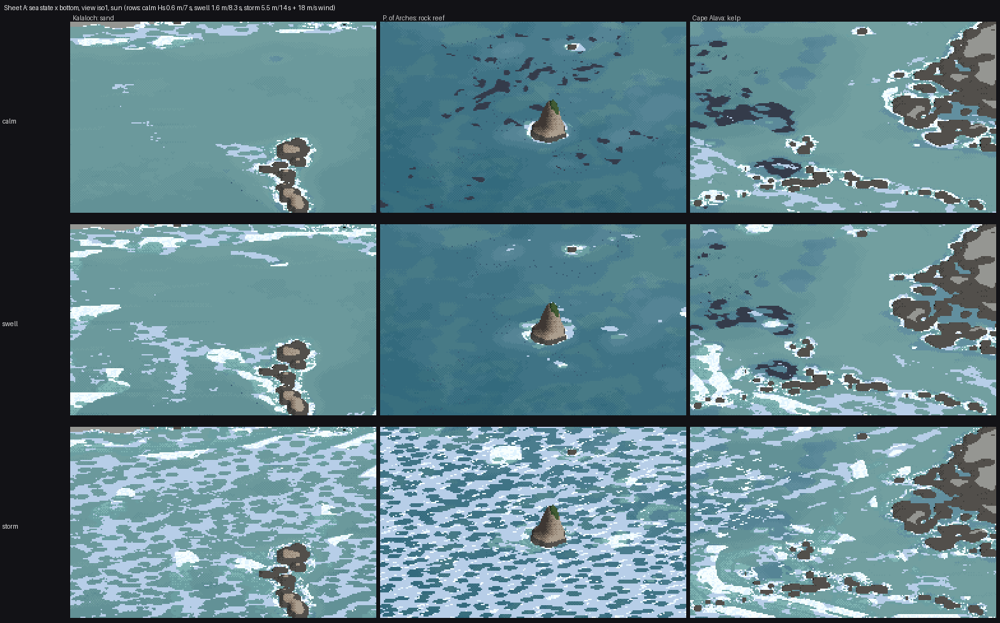

4. Painting the fields at every scale
What it's for. It turns the fields from how-tos 2 and 3 into an index canvas (ramp, step) at any pixel size. There's one painter, paint_sea, with no scale-specific code path: every mark asks how big it is in pixels here and decides for itself. The brief asked for the close view and the iso view to be developed in lockstep, because a study that grew two techniques for two scales (the conifers) felt like two different pictures. This page is how that holds together.
Code: paint_sea in code/sea/paint.py; code/lockstep.py, code/stage1.py, code/sheets.py.
The judge: one sheet, four scales, beside the photo
Every change I made to the painter was judged on this sheet, never on one scale alone:
python3 lockstep.py 720 750 ../stages/s2_poa_lockstep.png # 0.1, 0.3, 1, 3 m/px; photo | mine

The final lockstep. The same fields, palette and parameters in every row; only the pixel size changes.
1. Foam is coverage, not stipple
My first foam dithered density per pixel: a pixel was foam if F > bayer or F > random. At 1 m/px it read as salt; the water study's critic called its version "confetti", and mine was the same thing again:

Stage 1 v3 (right). Foam as scattered bright pixels on the shores, and kelp as dark camouflage over half the cove.
The fix separates how much from where the edge goes. Coverage cov comes from the fields. It is thresholded by a smooth noise field whose features are never smaller than 4 px, so the edges come out ragged but solid:
Fe = 1 - np.exp(-np.clip(Ff, 0, 6) * P.get('foam_gain', 0.3)) # count density -> coverage
cov = np.maximum(np.maximum(np.clip(Wf * 1.25, 0, 1.2), Fe), np.clip((Af - 0.2) * 1.6, 0, 1) * P.get('pool_lace', 0.9))
ecell = cq(3.0, mpp, 4.0)
xa = (x * tx_ + y * ty_) / P['lace_stretch']; ya = -x * ty_ + y * tx_
thr = 0.10 + 0.50 * fbmw(xa, ya, ecell, 68, 2)
foam = sea & (cov > thr)
The threshold noise is stretched 3× along the crest direction, because broken-crest foam lies in lines along the crest. Ruskin's "oval gaps" are Worley cells cut out of thinning foam. Older, thinner foam gets bigger holes, and holes exist only if they are at least 6 px across; smaller than that, a hole is just a dirty pixel:
hcell = cq(P['lace_cell'] * 2.2, mpp, 6.0)
hf1, hf2 = worley(x, y, hcell, 66, tx_, ty_, 1.6)
hole_r = np.clip(0.75 - cov * 0.7 + surfz * 0.35 * q, 0, 0.8)
holes = foam & (hf1 < hole_r) & (cov < 0.9) & (hcell / np.asarray(mpp) >= 6.0)
Tone: fresh whitewater (W > 0.35) gets lumps lit toward the sun. It's value noise sampled a third of a cell toward the sun, minus itself, giving highlight and lit steps with the shaded step in the dips. Old foam sits a step lower. Foam is never darker than the sea.
2. Every texture size in octaves of pixel size
A world-space texture 1 m across is sub-pixel at 3 m/px. Anything thresholded at sub-pixel size turns into per-pixel noise. So every cell size goes through one function:
def cq(base, mpp, k):
"""feature size: base metres, but never below k pixels; quantised to octaves so LOD bands don't swim."""
m = np.maximum(1.0, k * np.asarray(mpp, float) / base)
return base * 2.0 ** np.ceil(np.log2(m))
The octave rounding matters when zooming: the cell size jumps by 2× at fixed thresholds instead of sliding continuously, so the pattern doesn't swim. mpp can be a per-pixel array, which is what the eye-level camera passes (how-to 6).

figs.py cq: the cove at 3 m/px, with every cq replaced by its metre value (middle) and as shipped (right). Honestly, the difference is smaller than I expected. The middle panel's foam edges are 1 px speckle and its holes are pinpricks, where the right panel's edges are ragged but solid. The coverage fields are already smooth at 1 m, so most of the damage never happens. The rule earns its keep in the close views and at eye level, where one frame spans 0.05 to 20 m per pixel.
3. One noise direction per frame
This was my worst mistake, and the easiest to make. I wanted foam texture to follow the flow, so I rotated every Worley and fbm lookup by the local current. The current swirls round every rock and eddy, so the textures swirled with it. On the storm row, where the foam covers everything, the whole sea became marbled end-paper:

The Kalaloch storm at 1 m/px, noise rotated per pixel by the local current. The critic's word was "marbled paper". Nothing in the photos is shaped like this.
It took three passes to see the cause. Fixing only the threshold field's direction changed nothing, because the Worley holes and the kelp specks were still rotated (nb077). With every texture unrotated the swirl was gone, and what was left was honest but plain blobs:

The same frame with one global direction (the mean swell heading) for every texture. The swirls are gone; the storm is still wrong (see how-to 7), but it is now wrong for a physical reason.
The rule: the fields carry the local shapes; the textures stay put. Rotating a lookup per pixel invents structure: its curl is the current's curl, printed as a pattern. The code now takes the direction once:
if 'k0' not in S:
sea_ = S['depth'] > 0.5
S['k0'] = (float(np.median(S['kx'][sea_])), float(np.median(S['ky'][sea_])))
tx_, ty_ = -S['k0'][1], S['k0'][0]
4. Depth bands: flat values, a thin seam, from a smoothed depth
The sea's body is seven flat values by log depth (edges at 0.7, 1.6, 3, 5, 8 and 13 m), with a 50% checker only in a thin seam at each boundary, as the channel student taught: a single dotted row reads as Morse code. Two things mattered:
jit = (fbmw(x, y, 9.0, 5) - 0.5) * 2 * P['band_jitter'] # irregular band edges, world space
dsm = sample(S, G, 'depth_s') if 'depth_s' in S else d # depth smoothed by 6 m
lnd = np.log(np.maximum(dsm, 0.05))
cont = np.interp(lnd + jit * 0.35, edges, np.arange(len(edges)) + 0.5, left=0, right=len(edges))
Banding the raw 1 m lidar printed every boulder as a patch, and the first critic saw "patchy open water". Smoothed by 6 m, the depth gives broad, soft tonal areas, which is what the photo's open water is. Rock and sand get different ramps (rock bluer, sand greener, from the measurements in how-to 1), chosen per pixel against a Bayer threshold on smoothed rockiness, so the seam between them dithers.
5. The jade pool is its own ramp
Between sea (L* ~48) and foam (L* 84–96) the photo has a third value around every stack: the bubble pool, L* 62–77 and greener. Without it a stack's collar is white pasted straight onto blue, which is what the first critic saw ("hard-edged flat whites", "missing pale turquoise churned water"). aer is a three-step ramp from the measurements, thresholded on the aeration field. The pool also feeds foam coverage (pool_lace above), because the photo's pool is laced with surfacing foam.
6. Kelp: a mat whose area is the canopy cover
The sim first computes an expected canopy cover ρ. Bull kelp lives on rock, 2–18 m deep, in beds tens of metres across with gaps between them, and is thinner on the most exposed heads. Then it makes a mat whose area fraction equals ρ, by rank-uniformising a clump noise and thresholding it at ρ:
rho = np.clip(amount * hab * (0.55 + 0.45 * exp_) * bed, 0, 1)
U = np.empty_like(clump); o = np.argsort(clump, axis=None); U.flat[o] = np.linspace(0, 1, clump.size)
return (np.clip((rho - U) / 0.08 + 0.5, 0, 1) * (hab > 0.05)).astype(np.float32)
The painter draws a solid mat where ρ > 0.22. Where ρ is lower it draws floats as 2 px specks, and only inside groups (a second noise > 0.55), because scattered kelp comes in drifts, not evenly. My first kelp used the bed noise without gaps and covered half the cove (nb041 above); rank-uniformising is what made the amount controllable.

Cape Alava's kelp mat (orange) over rockiness (green) in map view. The beds sit on the rocky shelf off the island and the north reef, roughly where the Cape Alava photo shows them.
The sweep

Sheet A at 1 m/px: calm (Hs 0.6 m), swell (1.6 m) and storm (5.5 m, 18 m/s wind) × Kalaloch sand, the Point of the Arches reef and the Cape Alava kelp. The same painter and palette throughout; each place's own lidar and sim. There are also A_state_x_bottom_iso3.png and A_state_x_bottom_shore.png in img/.